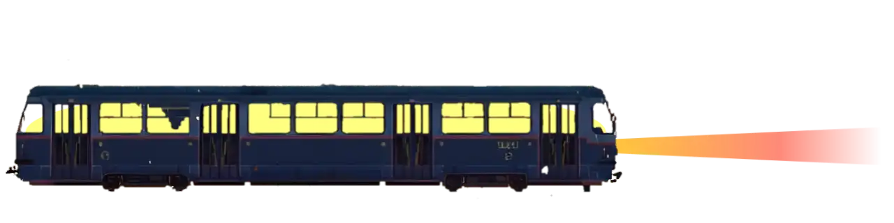

| ক. অনুপম | চ. অনুপমের মামা |
| খ. অনুপমের মা | ছ. বিনু দাদা |
| গ. ইংরেজ | জ. হরিশ |
| ঘ. কল্যানী | ঞ. শম্ভুনাথ সেন |
| ঙ. স্টেশন মাস্টার |
আজ আমার বয়স সাতাশ মাত্র । এ জীবনটা না দৈর্ঘ্যের হিসাবে বড়ো, না গুণের হিসাবে । তবু ইহার একটু বিশেষ মূল্য আছে । ইহা সেই ফুলের মতো যাহার বুকের উপরে ভ্রমর আসিয়া বসিয়াছিল, এবং সেই পদক্ষেপের ইতিহাস তাহার জীবনের মাঝখানে ফলের মতো গুটি ধরিয়া উঠিয়াছে ।
সেই ইতিহাসটুকু আকারে ছোটো, তাহাকে ছোটো করিয়াই লিখিব । ছোটোকে যাঁহারা সামান্য বলিয়া ভুল করেন না তাঁহারা ইহার রস বুঝিবেন ।
কলেজে যতগুলো পরীক্ষা পাস করিবার সব আমি চুকাইয়াছি । ছেলেবেলায় আমার সুন্দর চেহারা লইয়া পণ্ডিতমশায় আমাকে শিমুল ফুল ও মাকাল ফলের সহিত তুলনা করিয়া বিদ্রূপ করিবার সুযোগ পাইয়াছিলেন । ইহাতে তখন বড়ো লজ্জা পাইতাম; কিন্তু বয়স হইয়া এ কথা ভাবিয়াছি, যদি জন্মান্তর থাকে তবে আমার মুখে সুরূপ এবং পণ্ডিতমশায়দের মুখে বিদ্রূপ আবার যেন এমনি করিয়াই প্রকাশ পায় ।
আমার পিতা এতকালে গরিব ছিলেন । ওকালতি করিয়া তিনি প্রচুর টাকা রোজগার করিয়াছেন, ভোগ করিবার সময় নিমেষমাত্রও পান নাই । মৃত্যুতে তিনি যে হাঁফ ছাড়িলেন, সেই তাঁর প্রথম অবকাশ ।
আমার তখন বয়স অল্প । মার হাতেই আমি মানুষ । মা গরিবের ঘরের মেয়ে; তাই, আমরা যে ধনী এ কথা তিনিও ভোলেন না, আমাকেও ভুলিতে দেন না । শিশুকালে আমি কোলে কোলেই মানুষ-- বোধ করি, সেইজন্য শেষ পর্যন্ত আমার পুরাপুরি বয়সই হইল না । আজও আমাকে দেখিলে মনে হইবে, আমি অন্নপূর্ণার কোলে গজাননের ছোটো ভাইটি ।
আমার আসল অভিভাবক আমার মামা । তিনি আমার চেয়ে বড়োজোর বছর ছয়েক বড়ো । কিন্তু ফল্গুর বালির মতো তিনি আমাদের সমস্ত সংসারটাকে নিজের অন্তরের মধ্যে শুষিয়া লইয়াছেন । তাঁহাকে না খুঁড়িয়া এখানকার এক গণ্ডূষও রস পাইবার জো নাই । এই কারণে কোনো কিছুর জন্যই আমাকে কোনো ভাবনা ভাবিতে হয় না ।
কন্যার পিতা মাত্রেই স্বীকার করিবেন, আমি সৎপাত্র । তামাকটুকু পর্যন্ত খাই না । ভালোমানুষ হওয়ার কোনো ঝঞ্ঝাট নাই, তাই আমি নিতান্ত ভালোমানুষ । মাতার আদেশ মানিয়া চলিবার ক্ষমতা আমার আছে-- বস্তুত না-মানিবার ক্ষমতা আমার নাই । অন্তঃপুরের শাসনে চলিবার মতো করিয়াই আমি প্রস্তুত হইয়াছি, যদি কোনো কন্যা স্বয়ম্বরা হন তবে এই সুলক্ষণটি স্মরণ রাখিবেন ।
অনেক বড়ো ঘর হইতে আমার সম্বন্ধ আসিয়াছিল । কিন্তু মামা, যিনি পৃথিবীতে আমার ভাগ্যদেবতার প্রধান এজেণ্ট, বিবাহ সম্বন্ধে তাঁর একটা বিশেষ মত ছিল । ধনীর কন্যা তাঁর পছন্দ নয় । আমাদের ঘরে যে মেয়ে আসিবে সে মাথা হেঁট করিয়া আসিবে, এই তিনি চান । অথচ টাকার প্রতি আসক্তি তাঁর অস্থিমজ্জায় জড়িত । তিনি এমন বেহাই চান যাহার টাকা নাই অথচ যে টাকা দিতে কসুর করিবে না । যাহাকে শোষণ করা চলিবে অথচ বাড়িতে আসিলে গুড়গুড়ির পরিবর্তে বাঁধা হুঁকায় তামাক দিলে যাহার নালিশ খাটিবে না ।
আমার বন্ধু হরিশ কানপুরে কাজ করে । সে ছুটিতে কলিকাতায় আসিয়া আমার মন উতলা করিয়া দিল । সে বলিল, 'ওহে, মেয়ে যদি বল একটা খাসা মেয়ে আছে । '
কিছুদিন পূর্বেই এম.এ. পাস করিয়াছি । সামনে যতদূর পর্যন্ত দৃষ্টি চলে ছুটি ধূ ধূ করিতেছে; পরীক্ষা নাই, উমেদারি নাই, চাকরি নাই; নিজের বিষয় দেখিবার চিন্তাও নাই, শিক্ষাও নাই, ইচ্ছাও নাই-- থাকিবার মধ্যে ভিতরে আছেন মা এবং বাহিরে আছেন মামা ।
এই অবকাশের মরুভূমির মধ্যে আমার হৃদয় তখন বিশ্বব্যাপী নারীরূপের মরীচিকা দেখিতেছিল-- আকাশে তাহার দৃষ্টি, বাতাসে তাহার নিশ্বাস, তরুমর্মরে তাহার গোপন কথা ।
এমন সময় হরিশ আসিয়া বলিল, 'মেয়ে যদি বল, তবে--' । আমার শরীর মন বসন্তবাতাসে বকুলবনের নবপল্লবরাশির মতো কাঁপিতে কাঁপিতে আলোছায়া ধুনিতে লাগিল । হরিশ মানুষটা ছিল রসিক, রস দিয়া বর্ণনা করিবার শক্তি তাহার ছিল, আর আমার মন ছিল তৃষার্ত ।
আমি হরিশকে বলিলাম, 'একবার মামার কাছে কথাটা পাড়িয়া দেখো । '
হরিশ আসর জমাইতে অদ্বিতীয় । তাই সবর্ত্রই তাহার খাতির । মামাও তাহাকে পাইলে ছাড়িতে চান না । কথাটা তাঁর বৈঠকে উঠিল । মেয়ের চেয়ে মেয়ের বাপের খবরটাই তাঁহার কাছে গুরুতর । বাপের অবস্থা তিনি যেমনটি চান তেমনি । এককালে ইহাদের বংশে লক্ষ্মীর মঙ্গলঘট ভরা ছিল । এখন তাহা শূন্য বলিলেই হয়, অথচ তলায় সামান্য কিছু বাকি আছে । দেশে বংশমর্যাদা রাখিয়া চলা সহজ নয় বলিয়া ইনি পশ্চিমে গিয়া বাস করিতেছেন । সেখানে গরিব গৃহস্থের মতোই থাকেন । একটি মেয়ে ছাড়া তাঁর আর নাই । সুতরাং তাহারই পশ্চাতে লক্ষ্মীর ঘটটি একবারে উপুড় করিয়া দিতে দ্বিধা হইবে না ।
এ-সব ভালো কথা । কিন্তু মেয়ের বয়স যে পনেরো, তাই শুনিয়া মামার মন ভার হইল । বংশে তো কোনো দোষ নাই? না, দোষ নাই-- বাপ কোথাও তাঁর মেয়ের যোগ্য বর খুঁজিয়া পান না । একে তো বরের হাট মহার্ঘ, তাহার পরে ধনুকভাঙা পণ, কাজেই বাপ কেবলই সবুর করিতেছেন কিন্তু মেয়ের বয়স সবুর করিতেছে না ।
যাই হোক, হরিশের সরস রসনার গুণ আছে । মামার মন নরম হইল । বিবাহের ভূমিকা-অংশটা নির্বিঘ্নে সমাধা হইয়া গেল । কলিকাতার বাহিরে বাকি যে পৃথিবীটা আছে সমস্তটাকেই মামা আণ্ডামান দ্বীপের অন্তর্গত বলিয়া জানেন । জীবনে একবার বিশেষ কাজে তিনি কোন্নগর পর্যন্ত গিয়াছিলেন । মামা যদি মনু হইতেন তবে তিনি হাবড়ার পুল বার হওয়াটাকে তাঁহার সংহিতায় একেবারে নিষেধ করিয়া দিতেন । মনের মধ্যে ইচ্ছা ছিল, নিজের চোখে মেয়ে দেখিয়া আসিব । সাহস করিয়া প্রস্তাব করিতে পারিলাম না ।
কন্যাকে আশীর্বাদ করিবার জন্য যাহাকে পাঠানো হইল সে আমাদের বিনুদাদা, আমার পিস্তুতো ভাই । তাহার মত, রুচি এবং দক্ষতার 'পরে আমি ষোল-আনা নির্ভর করিতে পারি । বিনুদা ফিরিয়া আসিয়া বলিলেন, 'মন্দ নয় হে! খাঁটি সোনা বটে । '
বিনুদাদার ভাষাটা অত্যন্ত আঁট । যেখানে আমরা বলি 'চমৎকার', সেখানে তিনি বলেন 'চলনসই' । অতএব বুঝিলাম, আমরা ভাগ্যে প্রজাপতির সঙ্গে পঞ্চশরের কোনো বিরোধ নাই ।
বলা বাহুল্য, বিবাহ-উপলক্ষে কন্যাপক্ষকেই কলিকাতায় আসিতে হইল । কন্যার পিতা শম্ভুনাথবাবু হরিশকে কত বিশ্বাস করেন তাহার প্রমাণ এই যে, বিবাহের তিন দিন পূর্বে তিনি আমাকে প্রথম চক্ষে দেখেন এবং আশীর্বাদ করিয়া যান । বয়স তাঁর চল্লিশের কিছু এপারে বা ওপারে । চুল কাঁচা, গোঁফে পাক ধরিতে আরম্ভ করিয়াছে মাত্র । সুপুরুষ বটে । ভিড়ের মধ্যে দেখিলে সকলের আগে তাঁর উপরে চোখ পড়িবার মতো চেহারা ।
আশা করি, আমাকে দেখিয়া তিনি খুশি হইয়াছিলেন । বোঝা শক্ত, কেননা তিনি বড়োই চুপচাপ । যে দুটি-একটি কথা বলেন, যেন তাহাতে পুরা জোর দিয়া বলেন না । মামার মুখ তখন অনর্গল ছুটিতেছিল-- ধনে মানে আমাদের স্থান যে শহরের কারো চেয়ে কম নয়, সেইটেকেই তিনি নানা প্রসঙ্গে প্রচার করিতেছিলেন । শম্ভুনাথবাবু এ কথায় একেবারে যোগই দিলেন না-- কোনো ফাঁকে একটা হুঁ বা হাঁ কিছুই শোনা গেল না । আমি হইলে দমিয়া যাইতাম । কিন্তু, মামাকে দমানো শক্ত । তিনি শম্ভুনাথবাবুর চুপচাপ ভাব দেখিয়া ভাবিলেন, লোকটা নিতান্ত নির্জীব, একেবারে কোনো তেজ নাই । বেহাই-সম্প্রদায়ের আর যাই থাক্, তেজ থাকাটা দোষের, অতএব মামা মনে মনে খুশি হইলেন । শম্ভুনাথবাবু যখন উঠিলেন তখন মামা সংক্ষেপে উপর হইতেই তাঁকে বিদায় করিলেন, গাড়িতে তুলিয়া দিতে গেলেন না ।
পণ সম্বন্ধে দুই পক্ষে পাকাপাকি কথা ঠিক হইয়া গিয়াছিল । মামা নিজেকে অসামান্য চতুর বলিয়াই অভিমান করিয়া থাকেন । কথাবার্তায় কোথাও তিনি কিছু ফাঁক রাখেন নাই । টাকার অঙ্ক তো স্থির ছিলই, তার পরে গহনা কত ভরির এবং সোনা কত দরের হইবে সেও একেবারে বাঁধাবাঁধি হইয়া গিয়াছিল । আমি নিজে এসমস্ত কথার মধ্যে ছিলাম না; জানিতাম না, দেনা-পাওনা কী স্থির হইল । মনে জানিতাম, এই স্থূল অংশটাও বিবাহের একটা প্রধান অংশ, এবং সে অংশের ভার যাঁর উপরে তিনি এক কড়াও ঠকিবেন না । বস্তুত, আশ্চর্য পাকা লোক বলিয়া মামা আমাদের সমস্ত সংসারের প্রধান গর্বের সামগ্রী । যেখানে আমাদের কোনো সম্বন্ধ আছে সেখানে সর্বত্রই তিনি বুদ্ধির লড়াইয়ে জিতিবেন, এ একেবারে ধরা কথা । এইজন্য আমাদের অভাব না থাকিলেও এবং অন্য পক্ষের অভাব কঠিন হইলেও জিতিব, আমাদের সংসারের এই জেদ-- ইহাতে যে বাঁচুক আর যে মরুক ।
গায়ে-হলুদ অসম্ভব রকম ধুম করিয়া গেল । বাহক এত গেল যে তাহার আদমসুমারি করিতে হইলে কেরানি রাখিতে হয় । তাহাদিগকে বিদায় করিতে অপর পক্ষকে যে নাকাল হইতে হইবে, সেই কথা স্মরণ করিয়া মামার সঙ্গে মা একযোগে বিস্তর হাসিলেন ।
ব্যাণ্ড, বাঁশি, শখের কন্সর্ট প্রভৃতি যেখানে যতপ্রকার উচ্চ শব্দ আছে সমস্ত একসঙ্গে মিশাইয়া বর্বর কোলাহলের মত্তহস্তী দ্বারা সংগীত-সরস্বতীর পদ্মবন দলিত বিদলিত করিয়া, আমি তো বিবাহ-বাড়িতে গিয়া উঠিলাম । আংটিতে হারেতে জরি-জহরাতে আমার শরীর যেন গহনার দোকান নিলামে চড়িয়াছে বলিয়া বোধ হইল । তাঁহাদের ভাবী জামাইয়ের মূল্য কত সেটা যেন কতক পরিমাণে সর্বাঙ্গে স্পষ্ট করিয়া লিখিয়া, ভাবী শ্বশুরের সঙ্গে মোকাবিলা করিতে চলিয়াছিলাম ।
মামা বিবাহ-বাড়িতে ঢুকিয়া খুশি হইলেন না । একে তো উঠানটাতে বরযাত্রীদের জায়গা সংকুলান হওয়াই শক্ত, তাহার পরে সমস্ত আয়োজন নিতান্ত মধ্যম রকমের ।
ইহার পরে শম্ভুনাথবাবুর ব্যবহারটাও নেহাত ঠাণ্ডা । তাঁর বিনয়টা অজস্র নয় । মুখে তো কথাই নাই । কোমরে চাদর বাঁধা, গলাভাঙা, টাকপড়া, মিসকালো এবং বিপুল শরীর তাঁর একটি উকিল বন্ধু যদি নিয়ত হাত জোড় করিয়া, মাথা হেলাইয়া, নম্রতার স্মিতহাস্যে ও গদ্গদ বচনে কন্সর্ট পার্টির করতাল-বাজিয়ে হইতে শুরু করিয়া বরকর্তাদের প্রত্যেককে বার বার প্রচুররূপে অভিষিক্ত করিয়া না দিতেন তবে গোড়াতেই একটা এস্পার-ওসপার হইত ।
আমি সভায় বসিবার কিছুক্ষণ পরেই মামা শম্ভুনাথবাবুকে পাশের ঘরে ডাকিয়া লইয়া গেলেন । কী কথা হইল জানি না, কিছুক্ষণ পরেই শম্ভুনাথবাবু আমাকে আসিয়া বলিলেন, 'বাবাজি, একবার এই দিকে আসতে হচ্ছে । '
ব্যাপারখানা এই । -- সকলের না হউক, কিন্তু কোনো কোনো মানুষের জীবনের একটা-কিছু লক্ষ্য থাকে । মামার একমাত্র লক্ষ্য ছিল, তিনি কোনোমতেই কারো কাছে ঠকিবেন না । তাঁর ভয়, তাঁর বেহাই তাঁকে গহনায় ফাঁকি দিতে পারেন-- বিবাহকার্য শেষ হইয়া গেলে সে ফাঁকির আর প্রতিকার চলিবে না । বাড়িভাড়া, সওগাদ, লোকবিদায় প্রভৃতি সম্বন্ধে যেরকম টানাটানির পরিচয় পাওয়া গেছে তাহাতে মামা ঠিক করিয়াছিলেন, দেওয়া-থোওয়া সম্বন্ধে এ লোকটির শুধু মুখের কথার উপর ভর করা চলিবে না । সেইজন্য বাড়ির স্যাক্রাকে সুদ্ধ সঙ্গে আনিয়াছিলেন । পাশের ঘরে গিয়া দেখিলাম, মামা এক তক্তপোশে এবং স্যাক্রা তাহার দাঁড়িপাল্লা কষ্টিপাথর প্রভৃতি লইয়া মেজেয় বসিয়া আছে ।
শম্ভুনাথবাবু আমাকে বলিলেন, 'তোমার মামা বলিতেছেন, বিবাহের কাজ শুরু হইবার আগেই তিনি কনের সমস্ত গহনা যাচাই করিয়া দেখিবেন, ইহাতে তুমি কী বল । '
আমি মাথা হেঁট করিয়া চুপ করিয়া রহিলাম ।
মামা বলিলেন, 'ও আবার কী বলিবে । আমি যা বলিব তাই হইবে । '
শম্ভুনাথবাবু আমার দিকে চাহিয়া কহিলেন, 'সেই কথা তবে ঠিক? উনি যা বলিবেন তাই হইবে? এ সম্বন্ধে তোমার কিছুই বলিবার নাই?'
আমি একটু ঘাড়-নাড়ার ইঙ্গিতে জানাইলাম, এ-সব কথায় আমার সম্পূর্ণ অনধিকার ।
'আচ্ছা তবে বোসো, মেয়ের গা হইতে সমস্ত গহনা খুলিয়া আনিতেছি । ' এই বলিয়া তিনি উঠিলেন ।
মামা বলিলেন, 'অনুপম এখানে কী করিবে । ও সভায় গিয়া বসুক । '
শম্ভুনাথ বলিলেন,'না, সভায় নয়, এখানেই বসিতে হইবে । '
কিছুক্ষণ পরে তিনি একখানা গামছায় বাঁধা গহনা আনিয়া তক্তপোশের উপর মেলিয়া ধরিলেন । সমস্তই তাঁহার পিতামহীদের আমলের গহনা-- হাল ফ্যাশানের সূক্ষ্ণ কাজ নয়-- যেমন মোটা, তেমনি ভারী ।
স্যাক্রা গহনা হাতে তুলিয়া লইয়া বলিল, 'এ আর দেখিব কী । ইহাতে খাদ নাই-- এমন সোনা এখনকার দিনে ব্যবহারই হয় না । '
এই বলিয়া সে মকরমুখা মোটা একখানা বালায় একটু চাপ দিয়া দেখাইল , তাহা বাঁকিয়া যায় ।
মামা তখনি তাঁর নোটবইয়ে গহনাগুলির ফর্দ টুকিয়া লইলেন, পাছে যাহা দেখানো হইল তাহার কোনোটা কম পড়ে । হিসাব করিয়া দেখিলেন, গহনা যে-পরিমাণ দিবার কথা এগুলি সংখ্যায় দরে এবং ভারে তার অনেক বেশি ।
গহনাগুলির মধ্যে একজোড়া এয়ারিং ছিল । শম্ভুনাথ সেইটে স্যাক্রার হাতে দিয়া বলিলেন, 'এইটে একবার পরখ করিয়া দেখো । '
স্যাক্রা কহিল, 'ইহা বিলাতি মাল, ইহাতে সোনার ভাগ সামান্যই আছে । '
শম্ভুবাবু এয়ারিংজোড়া মামার হাতে দিয়া বলিলেন, 'এটা আপনারাই রাখিয়া দিন । '
মামা সেটা হাতে লইয়া দেখিলেন, এই এয়ারিং দিয়াই কন্যাকে তাঁহারা আশীর্বাদ করিয়াছিলেন ।
মামার মুখ লাল হইয়া উঠিল । দরিদ্র তাঁহাকে ঠকাইতে চাহিবে কিন্তু তিনি ঠকিবেন না, এই আনন্দ-সম্ভোগ হইতে বঞ্চিত হইলেন এবং তাহার উপরেও কিছু উপরি-পাওনা জুটিল । অত্যন্ত মুখ ভার করিয়া বলিলেন, 'অনুপম, যাও তুমি সভায় গিয়া বোসো গে । '
শম্ভুনাথবাবু বলিলেন, 'না, এখন সভায় বসিতে হইবে না । চলুন, আগে আপনাদের খাওয়াইয়া দিই । '
মামা বলিলেন, 'সে কী কথা । লগ্ন--'
শম্ভুনাথবাবু বলিলেন, 'সেজন্য কিছু ভাবিবেন না-- এখন উঠুন । '
লোকটি নেহাত ভালোমানুষ ধরনের কিন্তু ভিতরে বেশ একটু জোর আছে বলিয়া বোধ হইল । মামাকে উঠিতে হইল । বরযাত্রীদেরও আহার হইয়া গেল । আয়োজনের আড়ম্বর ছিল না । কিন্তু, রান্না ভালো এবং সমস্ত বেশ পরিষ্কার পরিচ্ছন্ন বলিয়া সকলেরই তৃপ্তি হইল ।
বরযাত্রীদের খাওয়া শেষ হইলে শম্ভুনাথবাবু আমাকে খাইতে বলিলেন । মামা বলিলেন, 'সে কী কথা । বিবাহের পূর্বে বর খাইবে কেমন করিয়া । '
এ সম্বন্ধে মামার কোনো মতপ্রকাশকে তিনি সম্পূর্ণ উপেক্ষা করিয়া আমার দিকে চাহিয়া বলিলেন, 'তুমি কী বল । বসিয়া যাইতে দোষ কিছু আছে?'
মূর্তিমতী মাতৃ-আজ্ঞা-স্বরূপে মামা উপস্থিত, তাঁর বিরুদ্ধে চলা আমার পক্ষে অসম্ভব । আমি আহারে বসিতে পারিলাম না ।
তখন শম্ভুনাথবাবু মামাকে বলিলেন, 'আপনাদিগকে অনেক কষ্ট দিয়াছি । আমরা ধনী নই, আপনাদের যোগ্য আয়োজন করিতে পারি নাই, ক্ষমা করিবেন । রাত হইয়া গেছে, আর আপনাদের কষ্ট বাড়াইতে ইচ্ছা করি না । এখন তবে--'
মামা বলিলেন, 'তা,সভায় চলুন, আমরা তো প্রস্তুত আছি । '
শম্ভুনাথ বলিলেন, 'তবে আপনাদের গাড়ি বলিয়া দিই?'
মামা আশ্চর্য হইয়া বলিলেন, 'ঠাট্টা করিতেছেন নাকি?'
শম্ভুনাথ কহিলেন, 'ঠাট্টা তো আপনিই করিয়া সারিয়াছেন । ঠাট্টার সম্পর্কটাকে স্থায়ী করিবার ইচ্ছা আমার নাই । '
মামা দুই চোখ এতবড়ো করিয়া মেলিয়া অবাক হইয়া রহিলেন ।
শম্ভুনাথ কহিলেন, 'আমার কন্যার গহনা আমি চুরি করিব, এ কথা যারা মনে করে তাদের হাতে আমি কন্যা দিতে পারি না । '
আমাকে একটি কথাও বলাও তিনি আবশ্যক বোধ করিলেন না । কারণ, প্রমাণ হইয়া গেছে, আমি কেহই নই ।
তার পরে যা হইল সে আমি বলিতে ইচ্ছা করি না । ঝাড়লণ্ঠন ভাঙিয়া-চুরিয়া, জিনিসপত্র লণ্ডভণ্ড করিয়া, বরযাত্রের দল দক্ষযজ্ঞের পালা সারিয়া বাহির হইয়া গেল ।
বাড়ি ফিরিবার সময় ব্যাণ্ড রসনচৌকি ও কন্সর্ট একসঙ্গে বাজিল না এবং অভ্রের ঝাড়গুলো আকাশের তারার উপর আপনাদের কর্তব্যের বরাত দিয়া কোথায় যে মহানির্বাণ লাভ করিল সন্ধান পাওয়া গেল না ।
বাড়ির সকলে তো রাগিয়া আগুন । কন্যার পিতার এত গুমর! কলি যে চারপোয়া হইয়া আসিল! সকলে বলিল,'দেখি, মেয়ের বিয়ে দেন কেমন করিয়া । ' কিন্তু মেয়ের বিয়ে হইবে না, এ ভয় যার মনে নেই তার শাস্তির উপায় কী ।
সমস্ত বাংলাদেশের মধ্যে আমিই একমাত্র পুরুষ যাহাকে কন্যার বাপ বিবাহের আসর হইতে নিজে ফিরাইয়া দিয়াছে । এতবড়ো সৎপাত্রের কপালে এতবড়ো কলঙ্কের দাগ কোন্ নষ্টগ্রহ এত আলো জ্বালাইয়া, বাজনা বাজাইয়া, সমারোহ করিয়া, আঁকিয়া দিল? বরযাত্ররা এই বলিয়া কপাল চাপড়াইতে লাগিল যে, 'বিবাহ হইল না অথচ আমাদের ফাঁকি দিয়া খাওয়াইয়া দিল-- পাকযন্ত্রটাকে সমস্ত অন্নসুদ্ধ সেখানে টান মারিয়া ফেলিয়া দিয়া আসিতে পারিলে তবে আফসোস মিটিত । '
'বিবাহের চুক্তিভঙ্গ ও মানহানির দাবিতে নালিশ করিব' বলিয়া মামা অত্যন্ত গোল করিয়া বেড়াইতে লাগিলেন । হিতৈষীরা বুঝাইয়া দিল, তাহা হইলে তামাশার যেটুকু বাকি আছে তাহা পুরা হইবে ।
বলা বাহুল্য, আমিও খুব রাগিয়াছিলাম । কোনো গতিকে শম্ভুনাথ বিষম জব্দ হইয়া আমাদের পায়ে ধরিয়া আসিয়া পড়েন, গোঁফের রেখায় তা দিতে দিতে যেটুকু বাকি আছে তাহা পুরা হইবে ।
কিন্তু, এই আক্রোশের কালো রঙের স্রোতের পাশাপাশি আর-একটা স্রোত বহিতেছিল যেটার রঙ একেবারেই কালো নয় । সমস্ত মন যে সেই অপরিচিতার পানে ছুটিয়া গিয়াছিল--এখনো যে তাহাকে কিছুতেই টানিয়া ফিরাইতে পারি না । দেয়ালটুকুর আড়ালে রহিয়া গেল গো । কপালে তার চন্দন আঁকা, গায়ে তার লাল শাড়ি, মুখে তার লজ্জার রক্তিমা, হৃদয়ের ভিতরে কী যে তা কেমন করিয়া বলিব । আমার কল্পলোকের কল্পলতাটি বসন্তের সমস্ত ফুলের ভার আমাকে নিবেদন করিয়া দিবার জন্য নত হইয়া পড়িয়াছিল । হাওয়া আসে, গন্ধ পাই, পাতার শব্দ শুনি-- কেবল আর একটিমাত্র পা-ফেলার অপেক্ষা-- এমন সময়ে সেই এক পদক্ষেপের দূরত্বটুকু এক মুহূর্তে অসীম হইয়া উঠিল ।
এতদিন যে প্রতি সন্ধ্যায় আমি বিনুদার বাড়িতে গিয়া তাঁহাকে অস্থির করিয়া তুলিয়াছিলাম । বিনুদার বর্ণনার ভাষা অত্যন্ত সংকীর্ণ বলিয়াই তাঁর প্রত্যেক কথাটি স্ফুলিঙ্গের মতো আমার মনের মাঝখানে আগুন জ্বালিয়া দিয়াছিল । বুঝিয়াছিলাম, মেয়েটির রূপ বড়ো আশ্চর্য, কিন্তু না দেখিলাম তাহাকে চোখে, না দেখিলাম তার ছবি; সমস্তই অস্পষ্ট হইয়া রহিল; বাহিরে ত সে ধরা দিলই না, তাহাকে মনেও আনিতে পারিলাম না-- এইজন্য মন সেদিনকার সেই বিবাহসভার দেয়ালটার বাহিরে ভূতের মতো দীর্ঘনিশ্বাস ফেলিয়া বেড়াইতে লাগিল ।
হরিশের কাছে শুনিয়াছি, মেয়েটিকে আমার ফোটোগ্রাফ দেখানো হইয়াছিল । পছন্দ করিয়াছে বৈকি । না করিবার তো কোনো কারণ নাই । আমার মন বলে, সে ছবি তার কোনো একটি বাক্সে লুকানো আছে । একলা ঘরে দরজা বন্ধ করিয়া এক- একদিন নিরালা দুপুরবেলায় সে কি সেটি খুলিয়া দেখে না । যখন ঝুঁকিয়া পড়িয়া দেখে তখন ছবিটির উপরে কি তার মুখের দুই ধার দিয়া এলোচুল আসিয়া পড়ে না । হঠাৎ বাহিরে কারো পায়ের শব্দ পাইলে সে কি তাড়াতাড়ি তার সুগন্ধ আঁচলের মধ্যে ছবিটিকে লুকাইয়া ফেলে না ।
দিন যায় । একটা বৎসর গেল । মামা তো লজ্জায় বিবাহসম্বন্ধের কথা তুলিতেই পারেন না । মার ইচ্ছা ছিল, আমার অপমানের কথা যখন সমাজের লোক ভুলিয়া যাইবে তখন বিবাহের চেষ্টা দেখিবেন ।
এদিকে আমি শুনিলাম, সে মেয়ের নাকি ভালো পাত্র জুটিয়াছিল কিন্তু সে পণ করিয়াছে , বিবাহ করিবে না । শুনিয়া আমার মন পুলকের আবেশে ভরিয়া গেল । আমি কল্পনায় দেখিতে লাগিলাম, সে ভালো করিয়া খায় না । সন্ধ্যা হইয়া আসে, সে চুল বাঁধিতে ভুলিয়া যায় । তার বাপ তার মুখের পানে চান আর ভাবেন, 'আমার মেয়ে দিনে দিনে এমন হইয়া যাইতেছে কেন । ' হঠাৎ কোনোদিন তার ঘরে আসিয়া দেখেন, মেয়ের দুই চক্ষে জলে ভরা । জিজ্ঞাসা করেন, 'মা, তোর কী হইয়াছে বল্ আমাকে । ' মেয়ে তাড়াতাড়ি চোখের জল মুছিয়া বলে, 'কই কিছুই তো হয়নি,বাবা । ' বাপের এক মেয়ে যে-- বড়ো আদরের মেয়ে । যখন অনাবৃষ্টির দিনের ফুলের কুঁড়িটির মতো মেয়ে একেবারে বিমর্ষ হইয়া পড়িয়াছে তখন বাপের প্রাণে আর সহিল না । তখন অভিমান ভাসাইয়া দিয়া তিনি ছুটিয়া আসিলেন আমাদের দ্বারে । তার পরে? তার পরে মনের মধ্যে সেই যে কালো রঙের ধারাটা বহিতেছে সে যেন কালো সাপের মতো রূপ ধরিয়া ফোঁস করিয়া উঠিল । সে বলিল, 'বেশ তো, আর-একবার বিবাহের আসর সাজানো হোক, আলো জ্বলুক, দেশ-বিদেশের লোকের নিমন্ত্রণ হোক, তার পরে তুমি বরের টোপর পায়ে দলিয়া দলবল লইয়া সভা ছাড়িয়া চলিয়া এসো । ' কিন্তু, যে ধারাটি চোখের জলের মতো শুভ্র সে রাজহংসের রূপ ধরিয়া বলিল, যেমন করিয়া আমি একদিন দময়ন্তীর পুষ্পবনে গিয়াছিলাম তেমনি করিয়া আমাকে একবার উড়িয়া যাইতে দাও-- আমি বিরহিণীর কানে কানে একবার সুখের খবরটা দিয়া আসি গে । ' তার পরে? তার পরে দুঃখের রাত পোহাইল, নববর্ষার জল পড়িল, ম্লান ফুলটি মুখ তুলিল--এবারে সেই দেয়ালটার বাহিরে রহিল সমস্ত পৃথিবীর আর-সবাই, আর ভিতরে প্রবেশ করিল একটিমাত্র মানুষ । তার পরে? তার পরে আমার কথাটি ফুরালো ।
কিন্তু, কথা এমন করিয়া ফুরাইল না । যেখানে আসিয়া তাহা অফুরান হইয়াছে সেখানকার বিবরণ একটুখানি বলিয়া আমার এ লেখা শেষ করিয়া দিই ।
মাকে লইয়া তীর্থে চলিয়াছিলাম । আমার উপরেই ভার ছিল । কারণ, মামা এবারেও হাবড়ার পুল পার হন নাই । রেলগাড়িতে ঘুমাইতেছিলাম । ঝাঁকানি খাইতে খাইতে মাথার মধ্যে নানাপ্রকার এলোমেলো স্বপ্নের ঝুমঝুমি বাজিতেছিল । হঠাৎ একটা কোন্ স্টেশনে জাগিয়া উঠিলাম । আলোতে অন্ধকারে মেশা সেও এক স্বপ্ন; কেবল আকাশের তারাগুলি চিরপরিচিত-- আর সবই অজানা অস্পষ্ট; স্টেশনের দীপ-কয়টা খাড়া হইয়া দাঁড়াইয়া আলো ধরিয়া এই পৃথিবীটা যে কত অচেনা, এবং যাহা চারি দিকে তাহা যে কতই বহুদূরে, তাহাই দেখাইয়া দিতেছে । গাড়ির মধ্যে মা ঘুমাইতেছেন; আলোর নীচে সবুজ পর্দা টানা; তোরঙ্গ বাক্স জিনিসপত্র সমস্তই কে কার ঘাড়ে এলোমেলো হইয়া রহিয়াছে, তাহারা যেন স্বপ্নলোকের উলটপালট আসবাব, সবুজ প্রদোষের মিট্মিটে আলোতে থাকা এবং না-থাকার মাঝখানে কেমন-একরকম হইয়া পড়িয়া আছে ।
এমন সময়ে সেই অদ্ভুত পৃথিবীর অদ্ভুত রাত্রে কে বলিয়া উঠিল, 'শিগ্গির চলে আয়, এই গাড়িতে জায়গা আছে । '
মনে হইল, যেন গান শুনিলাম । বাঙালি মেয়ের গলায় বাংলা কথা যে কী মধুর তাহা এমনি করিয়া অসময়ে অজায়গায় আচমকা শুনিলে তবে সম্পূর্ণ বুঝিতে পারা যায় । কিন্তু, এই গলাটিকে কেবলমাত্র মেয়ের গলা বলিয়া একটা শ্রেণীভুক্ত করিয়া দেওয়া চলে না, এ কেবল একটি মানুষের গলা; শুনিলেই মন বলিয়া ওঠে, 'এমন তো আর শুনি নাই । '
চিরকাল গলার স্বর আমার কাছে বড়ো সত্য । রূপ জিনিসটি বড়ো কম নয় কিন্তু মানুষের মধ্যে যাহা অন্তরতম এবং অনির্বচনীয়, আমার মনে হয়, কণ্ঠস্বর যেন তারই চেহারা । আমি তাড়াতাড়ি গাড়ির জানলা খুলিয়া বাহিরে মুখ বাড়াইয়া দিলাম; কিছুই দেখিলাম না । প্ল্যাট্ফর্মের অন্ধকারে দাঁড়াইয়া গার্ড তাহার একচক্ষু লণ্ঠন নাড়িয়া দিল, গাড়ি চলিল; আমি জানলার কাছে বসিয়া রহিলাম । আমার চোখের সামনে কোনো মূর্তি ছিল না, কিন্তু হৃদয়ের মধ্যে আমি একটি হৃদয়ের রূপ দেখিতে লাগিলাম । সে যেন এই তারাময়ী রাত্রির মতো, আবৃত করিয়া ধরে কিন্তু তাহাকে ধরিতে পারা যায় না । ওগো সুর, অচেনা কণ্ঠের সুর, এক নিমেষে তুমি যে আমার চিরপরিচয়ের আসনটির উপরে আসিয়া বসিয়াছ । কী আশ্চর্য পরিপূর্ণ তুমি-- চঞ্চল কালের ক্ষুব্ধ হৃদয়ের উপরে ফুলটির মতো ফুটিয়াছে অথচ তার ঢেউ লাগিয়া একটি পাপড়িও টলে নাই, অপরিমেয় কোমলতায় এতটুকু দাগ পড়ে নাই ।
গাড়ি লোহার মৃদঙ্গে তাল দিতে দিতে চলিল; আমি মনের মধ্যে গান শুনিতে শুনিতে চলিলাম । তাহার একটিমাত্র ধুয়া-- 'গাড়িতে জায়গা আছে । ' আছে কি, জায়গা আছে কি । জায়গা যে পাওয়া যায় না, কেউ যে কাকেও চেনে না । অথচ সেই না-চেনাটুকু যে কুয়াশামাত্র, সে যে মায়া, সেটা ছিন্ন হইলেই যে চেনার আর অন্ত নাই । ওগো সুধাময় সুর, যে হৃদয়ের অপরূপ রূপ তুমি সেই কি আমার চিরকালের চেনা নয় । জায়গা আছে, আছে--শীঘ্র আসিতে ডাকিয়াছ, শীঘ্রই আসিয়াছি, এক নিমেষও দেরি করি নাই ।
রাত্রে ভালো করিয়া ঘুম হইল না । প্রায় প্রতি স্টেশনেই একবার করিয়া মুখ বাড়াইয়া দেখিলাম, ভয় হইতে লাগিল, যাহাকে দেখা হইল না সে পাছে রাত্রেই নামিয়া যায় ।
পরদিন সকালে একটা বড়ো স্টেশনে গাড়ি বদল করিতে হইবে । আমাদের ফার্স্টক্লাসের টিকিট-- মনে আশা ছিল, ভিড় হইবে না । নামিয়া দেখি, প্ল্যাটফর্মে সাহেবদের আর্দালি-দল আসবাবপত্র লইয়া গাড়ির জন্য অপেক্ষা করিতেছে । কোন্ এক ফৌজের বড়ো জেনারেল-সাহেব ভ্রমণে বাহির হইয়াছেন । দুই-তিন মিনিট পরেই গাড়ি আসিল । বুঝিলাম, ফার্স্টক্লাসের আশা ত্যাগ করিতে হইবে । মাকে লইয়া কোন্ গাড়িতে উঠি সে এক বিষম ভাবনায় পড়িলাম । সব গাড়িতেই ভিড় । দ্বারে দ্বারে উঁকি মারিয়া বেড়াইতে লাগিলাম । এমন সময় সেকেণ্ডক্লাসের গাড়ি হইতে একটি মেয়ে আমার মাকে লক্ষ্য করিয়া বলিলেন, 'আপনারা আমাদের গাড়িতে আসুন-না--এখানে জায়গা আছে । '
আমি তো চমকিয়া উঠিলাম । সেই আশ্চর্যমধুর কণ্ঠ এবং সেই গানেরই ধুয়া-- 'জায়গা আছে' । ক্ষণমাত্র বিলম্ব না করিয়া মাকে লইয়া গাড়িতে উঠিয়া পড়িলাম । জিনিসপত্র তুলিবার প্রায় সময় ছিল না । আমার মতো অক্ষম দুনিয়ায় নাই । সেই মেয়েটিই কুলিদের হাত হইতে তাড়াতাড়ি চল্তি গাড়িতে আমাদের বিছানাপত্র টানিয়া লইল । আমার একটা ফোটোগ্রাফ তুলিবার ক্যামেরা স্টেশনেই পড়িয়া রহিল-- গ্রাহ্যই করিলাম না ।
তার পরে-- কী লিখিব জানি না । আমার মনের মধ্যে একটি অখণ্ড আনন্দের ছবি আছে, তাহাকে কোথায় শুরু করিব, কোথায় শেষ করিব? বসিয়া বসিয়া বাক্যের পর বাক্য যোজনা করিতে ইচ্ছা করে না । এবার সেই সুরটিকে চোখে দেখিলাম । তখনো তাহাকে সুর বলিয়াই মনে হইল । মায়ের মুখের দিকে চাহিলাম; দেখিলাম, তাঁর চোখে পলক পড়িতেছে না । মেয়েটির বয়স ষোলো কি সতেরো হইবে, কিন্তু নবযৌবন ইহার দেহে মনে কোথাও যেন একটুও ভার চাপাইয়া দেয় নাই । ইহার গতি সহজ, দীপ্তি নির্মল, সৌন্দর্যের শুচিতা অপূর্ব, ইহার কোনো জায়গায় কিছু জড়িমা নাই ।
আমি দেখিতেছি, বিস্তারিত করিয়া কিছু বলা আমার পক্ষে অসম্ভব । এমন-কি, সে যে কী রঙের কাপড় কেমন করিয়া পরিয়াছিল তাহাও ঠিক করিয়া বলিতে পারিব না । এটা খুব সত্য যে, তার বেশে ভূষায় এমন কিছুই ছিল না যেটা তাহাকে ছাড়াইয়া বিশেষ করিয়া চোখে পড়িতে পারে । সে নিজের চারি দিকের সকলের চেয়ে অধিক-রজনীগন্ধার শুভ্র মঞ্জরীর মতো সরল বৃন্তটির উপরে দাঁড়াইয়া, যে গাছে ফুটিয়াছে সে গাছকে সে একেবারে অতিক্রম করিয়া উঠিয়াছে । সঙ্গে দুটি-তিনটি ছোটো ছোটো মেয়ে ছিল, তাহাদিগকে লইয়া তাহার হাসি এবং কথার আর অন্ত ছিল না । আমি হাতে একখানা বই লইয়া সেদিকে কান পাতিয়া রাখিয়াছিলাম । যেটুকু কানে আসিতেছিল সে তো সমস্তই ছেলেমানুষদের সঙ্গে ছেলেমানুষি কথা । তাহার বিশেষত্ব এই যে, তাহার মধ্যে বয়সের তফাত কিছুমাত্র ছিল না -- ছোটোদের সঙ্গে সে অনায়াসে এবং আনন্দে ছোটো হইয়া গিয়াছিল । সঙ্গে কতকগুলি ছবিওয়ালা ছেলেদের গল্পের বই-- তাহারই কোন্ একটা বিশেষ গল্প শোনাইবার জন্য মেয়েরা তাকে ধরিয়া পড়িল । এ গল্প নিশ্চয় তারা বিশ পঁচিশ বার শুনিয়াছে । মেয়েদের কেন যে এত আগ্রহ তাহা বুঝিলাম । সেই সুধাকণ্ঠের সোনার কাঠিতে সকল কথা যে সোনা হইয়া ওঠে । মেয়েটির সমস্ত শরীর মন যে একেবারে প্রাণে ভরা, তার সমস্ত চলায় বলায় স্পর্শে প্রাণ ঠিকরিয়া ওঠে । তাই মেয়েরা যখন তার মুখে গল্প শোনে তখন, গল্প নয়, তাহাকেই শোনে; তাহাদের হৃদয়ের উপর প্রাণের ঝরনা ঝরিয়া পড়ে । তার সেই উদ্ভাসিত প্রাণ আমার সেদিনকার সমস্ত সূর্যকিরণকে সজীব করিয়া তুলিল; আমার মনে হইল, আমাকে যে-প্রকৃতি তাহার আকাশ দিয়া বেষ্টন করিয়াছে সে ঐ তরুণীরই অক্লান্ত অম্লান প্রাণের বিশ্বব্যাপী বিস্তার । -- পরের স্টেশনে পৌঁছিতেই খাবারওয়ালাকে ডাকিয়া সে খুব খানিকটা চানা-মুঠ কিনিয়া লইল, এবং মেয়েদের সঙ্গে মিলিয়া নিতান্ত ছেলেমানুষের মতো করিয়া কলহাস্য করিতে করিতে অসংকোচে খাইতে লাগিল । আমার প্রকৃতি যে জাল দিয়া বেড়া--আমি কেন বেশ সহজে হাসিমুখে মেয়েটির কাছে এই চানা একমুঠা চাহিয়া লইতে পারিলাম না । হাত বাড়াইয়া দিয়া কেন আমার লোভ স্বীকার করিলাম না ।
মা ভালো-লাগা এবং মন্দ-লাগার মধ্যে দোমনা হইয়া ছিলেন । গাড়িতে আমি পুরুষমানুষ, তবু ইহার কিছুমাত্র সংকোচ নাই, বিশেষত এমন লোভীর মত খাইতেছে,সেটা ঠিক তাঁর পছন্দ হইতেছিল না; অথচ ইহাদের বেহায়া বলিয়াও তাঁর ভ্রম হয় নাই । তাঁর মনে হইল, এ মেয়ের বয়স হইয়াছে কিন্তু শিক্ষা হয় নাই । মা হঠাৎ কারো সঙ্গে আলাপ করিতে পারেন না । মানুষের সঙ্গে দূরে দূরে থাকাই তাঁর অভ্যাস । এই মেয়েটির পরিচয় লইতে তাঁর খুব ইচ্ছা, কিন্তু স্বাভাবিক বাধা কাটাইয়া উঠিতে পারিতেছিলেন না ।
এমন সময় গাড়ি একটা বড়ো স্টেশনে আসিয়া থামিল । সেই জেনারেল-সাহেবের একদল অনুসঙ্গী এই স্টেশন হইতে উঠিবার উদ্যোগ করিতেছে । গাড়িতে কোথাও জায়গা নাই । বার বার আমাদের গাড়ির সামনে দিয়া তারা ঘুরিয়া গেল । মা তো ভয়ে আড়ষ্ট, আমিও মনের মধ্যে শান্তি পাইতেছিলাম না ।
গাড়ি ছাড়িবার অল্পকাল পূর্বে একজন দেশী রেলোয়ে কর্মচারী, নাম-লেখা দুই খানা টিকিট গাড়ির দুই বেঞ্চের কাছে লট্কাইয়া দিয়া আমাকে বলিল, 'এ গাড়ির এই দুই বেঞ্চ আগে হইতেই দুই সাহেব রিজার্ভ করিয়াছেন, আপনাদিগকে অন্য গাড়িতে যাইতে হইবে । '
আমি তো তাড়াতাড়ি ব্যস্ত হইয়া দাঁড়াইয়া উঠিলাম । মেয়েটি হিন্দিতে বলিল, 'না, আমরা গাড়ি ছাড়িব না । '
সে লোকটি রোখ করিয়া বলিল, 'না ছাড়িয়া উপায় নাই । '
কিন্তু মেয়েটির চলিষ্ণুতার কোনো লক্ষণ না দেখিয়া সে নামিয়া গিয়া ইংরেজ স্টেশন-মাস্টারকে ডাকিয়া আনিল । সে আসিয়া আমাকে বলিল, 'আমি দুঃখিত কিন্তু--'
শুনিয়া আমি 'কুলি কুলি' করিয়া ডাক ছাড়িতে লাগিলাম । মেয়েটি উঠিয়া দুই চক্ষে অগ্নিবর্ষণ করিয়া বলিল,'না, আপনি যাইতে পারিবেন না, যেমন আছেন বসিয়া থাকুন । '
বলিয়া সে দ্বারের কাছে দাঁড়াইয়া স্টেশন-মাস্টারকে ইংরেজি ভাষায় বলিল, 'এ গাড়ি আগে হইতে রিজার্ভ করা, এ কথা মিথ্যাকথা । '
বলিয়া নাম-লেখা টিকিট খুলিয়া প্ল্যাটফর্মে ছুঁড়িয়া ফেলিয়া দিল ।
ইতিমধ্যে আর্দালি সমেত ইউনিফর্ম-পরা সাহেব দ্বারের কাছে আসিয়া দাঁড়াইয়াছে । গাড়িতে সে তার আসবাব উঠাইবার জন্য আর্দালিকে প্রথমে ইশারা করিয়াছিল । তাহার পর মেয়েটির মুখে তাকাইয়া, তার কথা শুনিয়া, ভাব দেখিয়া স্টেশন-মাস্টারকে একটু স্পর্শ করিল এবং তাহাকে আড়ালে লইয়া গিয়া কী কথা হইল জানি না । দেখা গেল, গাড়ি ছাড়িবার সময় অতীত হইলেও আর-একটা গাড়ি জুড়িয়া তবে ট্রেন ছাড়িল । মেয়েটি তার দলবল লইয়া আবার একপত্তন চানা-মুঠ খাইতে শুরু করিল , আর আমি লজ্জায় জানলার বাহিরে মুখ বাড়াইয়া প্রকৃতির শোভা দেখিতে লাগিলাম ।
কানপুরে গাড়ি আসিয়া থামিল । মেয়েটি জিনিসপত্র বাঁধিয়া প্রস্তুত-- স্টেশনে একটি হিন্দুস্থানি চাকর ছুটিয়া আসিয়া ইহাদিগকে নামাইবার উদ্যোগ করিতে লাগিল ।
মা তখন আর থাকিতে পারিলেন না । জিজ্ঞাসা করিলেন, 'তোমার নাম কী, মা । '
মেয়েটি বলিল, 'আমার নাম কল্যাণী । '
শুনিয়া মা এবং আমি দুজনেই চমকিয়া উঠিলাম ।
'তোমার বাবা-- '
'তিনি এখানকার ডাক্তার, তাঁর নাম শম্ভুনাথ সেন । '
তার পরেই সবাই নামিয়া গেল ।
মামার নিষেধ অমান্য করিয়া, মাতৃ-আজ্ঞা ঠেলিয়া, তার পরে আমি কানপুরে আসিয়াছি । কল্যাণীর বাপ এবং কল্যাণীর সঙ্গে দেখা হইয়াছে । হাত জোড় করিয়াছি, মাথা হেঁট করিয়াছি; শম্ভুনাথবাবুর হৃদয় গলিয়াছে । কল্যাণী বলে, 'আমি বিবাহ করিব না । '
আমি জিজ্ঞাসা করিলাম, 'কেন । '
সে বলিল, 'মাতৃ-আজ্ঞা । '
কী সর্বনাশ! এ পক্ষেও মাতুল আছে নাকি ।
তার পরে বুঝিলাম, মাতৃভূমি আছে । সেই বিবাহ-ভাঙার পর হইতে কল্যাণী মেয়েদের শিক্ষার ব্রত গ্রহণ করিয়াছে ।
কিন্তু, আমি আশা ছাড়িতে পারিলাম না । সেই সুরটি যে আমার হৃদয়ের মধ্যে আজও বাজিতেছে-- সে যেন কোন্ ওপারের বাঁশি-- আমার সংসারের বাহির হইতে আসিল-- সমস্ত সংসারের বাহিরে ডাক দিল । আর, সেই যে রাত্রির অন্ধকারের মধ্যে আমার কানে আসিয়াছিল 'জায়গা আছে', সে যে আমার চিরজীবনের গানের ধুয়া হইয়া রহিল । তখন আমার বয়স ছিল তেইশ, এখন হইয়াছে সাতাশ । এখনো আশা ছাড়ি নাই, কিন্তু মাতুলকে ছাড়িয়াছি । নিতান্ত এক ছেলে বলিয়া মা আমাকে ছাড়িতে পারেন নাই ।
তোমরা মনে করিতেছ, আমি বিবাহের আশা করি? না, কোনোকালেই না । আমার মনে আছে, কেবল সেই একরাত্রির অজানা কণ্ঠের মধুর সুরের আশা-- জায়গা আছে । নিশ্চয়ই আছে । নইলে দাঁড়াব কোথায়? তাই বৎসরের পর বৎসর যায়-- আমি এইখানেই আছি । দেখা হয়, সেই কণ্ঠ শুনি, যখন সুবিধা পাই কিছু তার কাজ করে দিই-- আর মন বলে, এই তো জায়গা পাইয়াছি । ওগো অপরিচিতা, তোমার পরিচয়ের শেষ হইল না, শেষ হইবে না; কিন্তু ভাগ্য আমার ভালো, এই তো আমি জায়গা পাইয়াছি ।